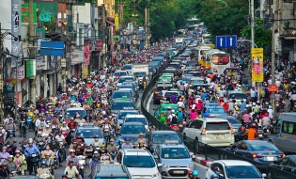

HCMC STUDIO
Analysis for Mobility
A combined macro + micro assessment of traffic dynamics and public transport experience in Ho Chi Minh City.
Scroll down to explore the mobility story of Ho Chi Minh City. ↓OVERVIEW
Two layers, one story
This site presents a two-layer mobility reading: a macro-scale, data-driven assessment of traffic and supply patterns, paired with a micro-scale field investigation of public transport experience and corridor conditions.
Macro-Level Mobility Assessment
- Citywide traffic distribution (mode-specific intensity)
- Congestion measurement (space × time indicators)
- Public transport supply & accessibility (schedule-based)
- Integrated interpretation (typologies & priority zones)
Micro-Level Site Investigation
- Bus transect observation (transfers, waiting, stop conditions)
- Metro user experience (Line 1 station + in-vehicle + ticketing)
- Corridor snapshots (Line 1 & Line 2 interface and street context)
(Micro panels will be inserted into Part pages later.)
MOTIVATION
Why this analysis matters
Key motivation
- Limited availability of high-resolution, mode-specific traffic evidence at city scale
- Many studies overlook temporal dynamics and modal differences in mobility patterns
- Public transport may play a limited yet critical role in addressing urban mobility stress
Traffic context (field impression)

Modal Share Snapshot
Hover a slice to see the mode and share.
Hover
—
Share
—
Values used here: Motorcycles 74%, Active Mobility 19%, Public Transport 4%, Private Cars 1%, Other 2%.
CHAPTERS
Choose where to go next
or follow the story with us →Framework
Unified spatiotemporal unit (250m grid + time) linking distribution, congestion, and supply.
Part I — Traffic Distribution
Mode-specific vehicle intensity across space (SVI detection: motorcycles, cars, buses).
Part II — Measuring Congestion
Indicators and comparative patterns across space and time.
Part III — Public Transport Supply
Schedule-based supply patterns, reachability, and weekday/weekend comparison.
Interpretation
Cross-reading across modes, time, and space to identify typologies and priorities.
Conclusion
Key takeaways, limitations, and next steps.